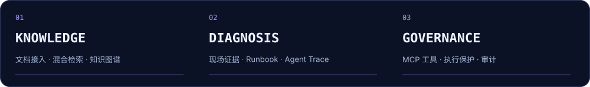
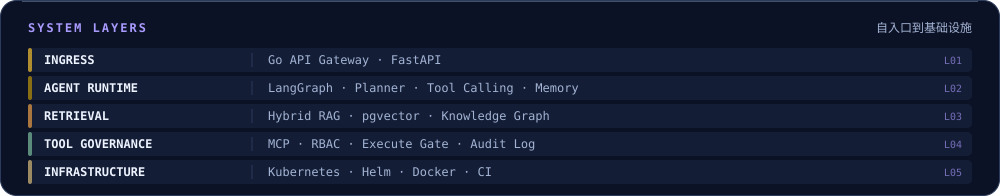
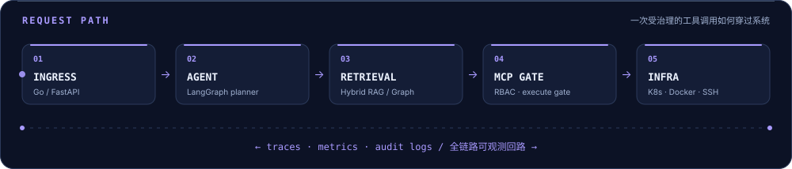

AI Agent · AIOps · Platform Engineering
让知识可检索，让工具可治理，让系统可观测。
👋 关于我 · About
- 👋 你好，我是 Zhifeng Jin，关注 AI Agent 应用开发、AIOps 与平台工程，喜欢把知识检索、工具调用和基础设施自动化连成完整系统。
- 🧠 AI 应用：围绕企业文档接入、Hybrid RAG、知识图谱与 Agent Runtime，探索从「找到信息」到「执行任务」的工程链路。
- ☁️ 云原生与运维：围绕 Kubernetes 故障诊断、MCP 工具治理与服务可观测性，让模型决策有证据、工具执行有边界。
- 🛠️ 工程实践：主要使用 Python / FastAPI，结合 Go、React / Vue 与 TypeScript，关注 API、数据层、控制台和部署之间的协作。
- 📦 作品入口：下面整理了 3 个 AI / 运维核心项目与 3 个网关、全栈、网络认证实践；每项均附仓库与可继续阅读的技术资料。
- 🌱 持续探索：检索质量评估、Agent 执行可靠性、权限边界与故障恢复；欢迎交流实现思路，也欢迎带着具体问题来讨论。
✨ 我的工程兴趣：把文档、模型、工具和基础设施连接起来，做出能解释、能部署、能继续演进的系统。

🧭 从哪里开始看？
- 想了解 AI 应用开发 → 从企业知识库 Agent 入手，看连接器、Hybrid RAG、知识图谱与工作流。
- 想了解 AIOps / SRE → 从故障诊断 Agent 入手，看 Kubernetes 现场证据、Runbook 与 Trace。
- 想了解 MCP / 工具工程 → 从 DevOps MCP Server 入手，看工具目录、执行门与审计。
🚀 代表项目 · Selected Work
以 知识自动化 → 故障诊断 → 工具治理 为主线，下面展开项目场景、系统能力与值得深入阅读的工程设计。
🧠 01 · 企业级 AI Agent 平台
KNOWLEDGE × AGENT · Python / FastAPI / Apache-2.0
面向企业内部文档分散、知识检索与流程执行割裂的问题，组织连接器、知识处理、检索增强与 Agent 工作流，形成可私有化部署的知识自动化平台。
🔬 技术实现与工程细节
- 文档接入与同步：飞书 / 语雀 / GitLab 连接器统一接入，配合全量与增量同步、作业调度和失败重试，管理知识进入系统的过程。
- 混合检索链路：文档分块与 Embedding 后，融合向量检索、全文检索与知识图谱，支持可选 Rerank 和带引用回答，兼顾语义召回与事实定位。
- Agent 与工作流：Planner、Tool Registry、Memory 与 LLM Gateway 协作，通过 DAG、审批节点及 API / Webhook / Schedule 触发器组织任务执行。
- 平台工程：JWT / RBAC / 租户隔离覆盖数据访问；OpenTelemetry、Prometheus 与 Grafana 提供观测入口，交付 Compose、Kubernetes 清单与 Helm Chart。
🔧 重点关注：检索融合、权限约束与异步任务生命周期，避免知识链路和执行链路各自孤立。
🖼️ 展开项目演示入口

点击封面前往演示页，项目架构、部署方法与功能边界见仓库文档。
🔎 02 · 自治式 AIOps / SRE 平台
INCIDENT × EVIDENCE · LangGraph / MCP / Kubernetes
面向 SRE / DevOps 的故障诊断场景，将自然语言故障描述转为工具规划、现场证据采集、Runbook 检索与结构化 Incident Report。
🔬 技术实现与工程细节
- 多步诊断：LangGraph 组织 agent → tools → agent 循环，结合会话与工作记忆推进根因分析，支持 Kubernetes、Docker 与 SSH 工具发现和调用。
- 典型故障场景：覆盖 CrashLoopBackOff、OOMKilled、ImagePullBackOff 与 502 / 503 等排查入口，将资源状态、日志与知识库信息放入同一诊断上下文。
- 知识与权限：Runbook / SOP 检索结合飞书同步，以 organization_id 约束知识访问，并通过 JWT / RBAC 组织多租户入口。
- 诊断过程可见：Agent Trace 记录工具调用与耗时，SSE 向 React 控制台流式输出；PostgreSQL、Prometheus / Grafana 与 Compose 组成数据、观测和部署基础。
🔧 重点关注：诊断结论与证据之间的对应关系，以及多步工具调用过程的可追踪性。
🖼️ 展开项目演示入口

点击封面前往演示页，项目架构、部署方法与功能边界见仓库文档。
🛡️ 03 · DevOps MCP Server
PROTOCOL × GOVERNANCE · MCP / Docker / SSH
为 MCP 客户端提供 Linux、Docker、Kubernetes 与 SSH 运维工具，把基础设施能力封装为有明确权限与风险分级的协议接口。
🔬 技术实现与工程细节
- 18 个工具：包含健康检查、CPU / 内存 / 磁盘、进程、容器日志、Kubernetes 资源与 SSH 等工具，目录显式标注风险级别和权限要求。
- 默认只读：EXECUTE_TOOLS_ENABLED=false；通过模块白名单、执行保护与命令过滤约束操作范围，将只读检查与高风险动作分开处理。
- 执行确认与审计：提供 confirm_execute_action 和 get_audit_logs 等接口，为客户端调用建立确认与记录入口。
- 接入与交付：提供 Cursor MCP 配置示例、工具枚举脚本、Docker Compose 与 CI 配置，方便从本地验证逐步接入 Agent 系统。
🔧 重点关注：工具 Schema、风险分级、执行开关和审计记录如何共同约束模型的操作边界。
🧩 更多开源实践 · Engineering Portfolio
补充展示模型网关、全栈业务与网络认证三个方向。以下介绍仓库能力与实践主题；具体实现与许可说明以各仓库为准。
⚡ 04 · 多模型 API 网关
GATEWAY × AI API · Go / Gateway / AGPL-3.0
多模型统一接入与 AI 资产管理实践，围绕模型渠道、通道池、动态计价与负载均衡梳理 AI 服务网关的核心能力。
🔬 技术实现与工程细节
- 系统视角：关注请求从统一 API 入口到模型渠道的路由过程，以及渠道管理、计费规则与可用性之间的关系。
- 阅读入口：仓库包含中文说明、完整英文文档与 web/ 前端；保留仓库及上游许可声明。
🔧 开源实践方向：模型服务接入、网关路由与管理控制台。
🦄 05 · 全栈交易系统
FULL STACK × DELIVERY · Go / Vue 3 / PostgreSQL
Go + Vue 3 / TypeScript 的虚拟商品交易与自动发货系统实践，覆盖用户前台、管理后台与 API 服务。
🔬 技术实现与工程细节
- 交易链路：围绕商品、购物车、订单、支付与自动发货组织业务模块，支持多支付渠道与多语言、多币种场景。
- 后端与安全：按公开、用户、管理、上游与渠道划分 API；使用独立用户 / 管理员 JWT、登录限流与敏感数据加密。
- 数据与部署：SQLite / PostgreSQL、Redis 与异步队列配置，配套容器化部署及生产配置说明。
🔧 开源实践方向：业务状态流转、API 权限分层与前后端交付。
🌐 06 · 基础设施自动化
IDENTITY × NETWORK · Docker / Python / FreeRADIUS
将 Go-Ldap-Admin、OpenLDAP、FreeRADIUS 与 UniFi 组合为企业无线网络认证方案，围绕统一账号、802.1X 接入与部门网络隔离整理部署实践。
🔬 技术实现与工程细节
- 统一身份：通过 LDAP 管理账号与组织信息，由 FreeRADIUS 对接认证，再接入 UniFi 无线网络。
- 动态 VLAN：将 LDAP 部门属性映射到 RADIUS 响应，按部门下发 VLAN，减少为每个组织单独配置 SSID 的复杂度。
- 部署与排障：提供 Compose 部署、配置路径、权限处理、RADIUS Debug 与 radtest 调试说明。
🔧 工程实践方向：身份系统集成、协议配置与可复现排障。
🛠️ 技术能力 · Engineering Stack

🧠 AI / Agent / Retrieval
- Agent 编排：LangGraph、Planner、Tool Calling、Memory、MCP 工具发现与调用。
- 知识工程：文档接入、分块、Embedding、向量与全文混合检索、知识图谱、Rerank 与引用回答。
- 工作流：DAG、审批节点、Webhook / Schedule 触发与执行生命周期。
⚙️ Backend / Data / Product
- 后端与 API：Python、FastAPI、SQLAlchemy async、Alembic；Go 服务与网关实践。
- 数据与缓存：PostgreSQL、Redis、ChromaDB；关注租户约束、数据模型与异步任务协作。
- 控制台与全栈：React / Vue 3、TypeScript、Vite、Tailwind；将业务接口与可操作界面连接起来。
☁️ Infrastructure / Security / Delivery
- 基础设施：Linux、Docker、Kubernetes、SSH，以及 LDAP / FreeRADIUS / UniFi 集成实践。
- 权限与治理：JWT、RBAC、多租户隔离、工具风险分级、执行保护与审计日志。
- 交付与观测：Docker Compose、Kubernetes manifests、Helm、GitHub Actions、OpenTelemetry、Prometheus 与 Grafana。

🔗 把这些技术放进一条链路

上图为项目能力的组合示意，各项目实际集成范围见对应仓库。
📚 技术笔记与阅读入口 · Build in Public
将项目文档作为技术笔记入口，沿着一个问题读到设计与实现：
- 🔍 企业知识如何进入 RAG？ — 从文档同步、智能分块读到混合检索、图谱与引用回答。
- 🧩 Agent 如何执行多步任务？ — 从 Planner、工具注册与 Memory 读到工作流编排。
- 🩺 故障诊断如何组织证据？ — 从 LangGraph Agent 循环读到 Kubernetes 工具、Runbook 与 Incident Report。
- 🔐 MCP 如何划分读与写？ — 从工具目录的风险 / 权限读到默认只读与执行保护。
- 📦 系统如何交付？ — 从环境配置与 Compose 读到 Kubernetes 和 Helm 部署入口。
🌱 持续探索 · What’s Next
- 检索质量：如何组织评测样本、定位召回与排序问题，让回答更有依据。
- 执行可靠性：如何处理超时、重试、部分失败与长任务状态，让 Agent 任务更可控。
- 可观测性：如何把模型决策、工具调用、耗时与成本放入同一个分析上下文。
- 平台体验：如何降低系统配置、知识接入与工具集成的使用门槛。
💡 写代码时在意的事
- 🛡️ 边界明确：权限、租户、数据访问与执行范围应在接口和实现中看得见。
- 🔎 过程可查：错误要能定位，工具调用要有记录，结论要有证据。
- 📦 交付完整：代码之外，补上配置模板、启动方式、部署入口与技术文档。
- 🧱 持续演进：先理清模块职责，再扩展能力；让后续阅读和修改都有路径。
🤝 交流与合作 · Let’s Connect
欢迎围绕 Agent 工程、RAG、MCP、Kubernetes 诊断、平台工程 交流。发现问题或有改进建议，可以在对应仓库提交 Issue / PR。
🐙 GitHub · 📂 所有仓库 · 🧠 Agent Platform · 🛡️ MCP Server
把想法写成代码，把系统做得清晰可靠。欢迎交流，也感谢每一份反馈 ✨
如果某个项目对你有帮助，欢迎留下一个 ⭐